Começe por aqui
Este post revisa as principais funções para manipulação de dados do Tidyverse. O material serve mais como referência e apoio ao tutorial de ggplot2 do que como introdução ao assunto.
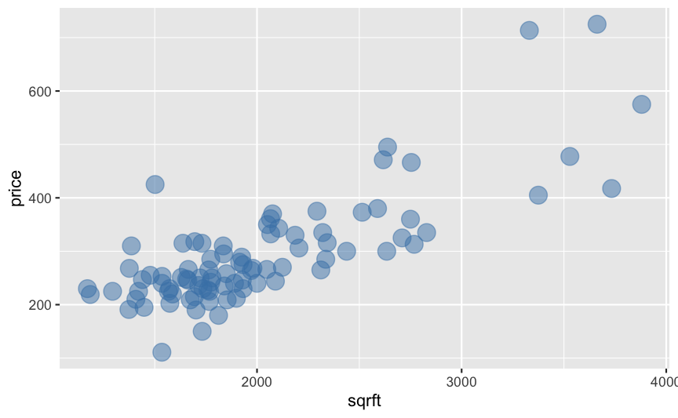
O gráfico de dispersão mapeia pares de pontos num plano bidimensional. A principal utilidade deste tipo de gráfico é deixar evidente a correlação entre as duas variáveis escolhidas.
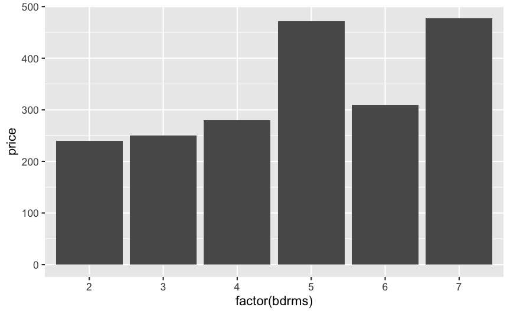
Um gráfico do colunas é uma ferramenta de visualização poderosa e versátil para visualizar a diferença de valores entre classes e também a evolução de valores ao longo do tempo.
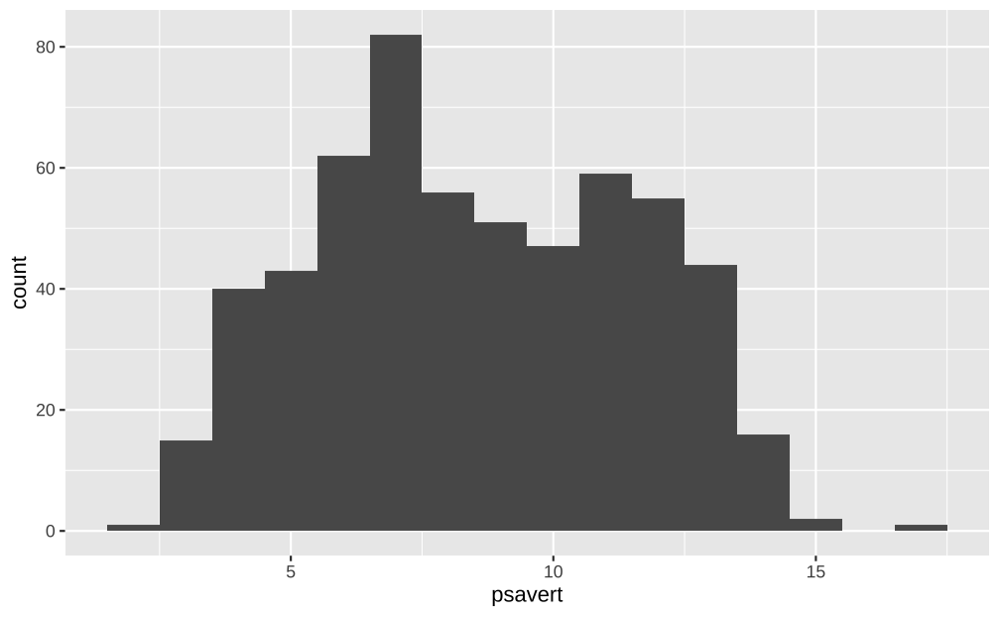
Um histograma serve para visualizar a distribuição de um conjunto de dados. É uma visualização estatística poderosa para entender o comportamento dos dados
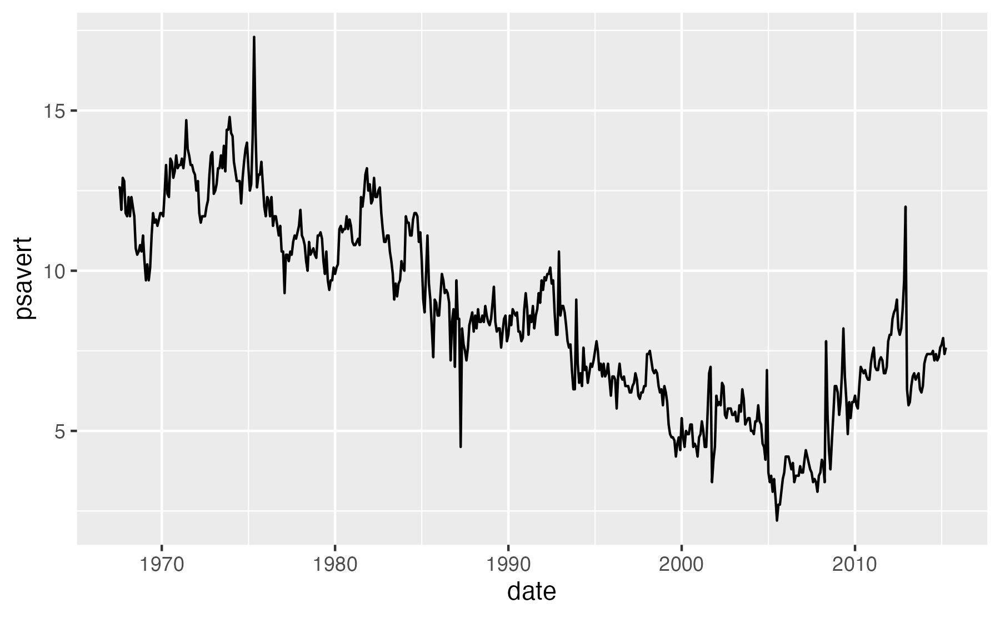
Gráficos de linha são frequentemente usados para representar séries de tempo, isto é, valores que mudam ao longo do tempo. Estes gráficos revelam a evolução de uma variável ao longo do tempo.
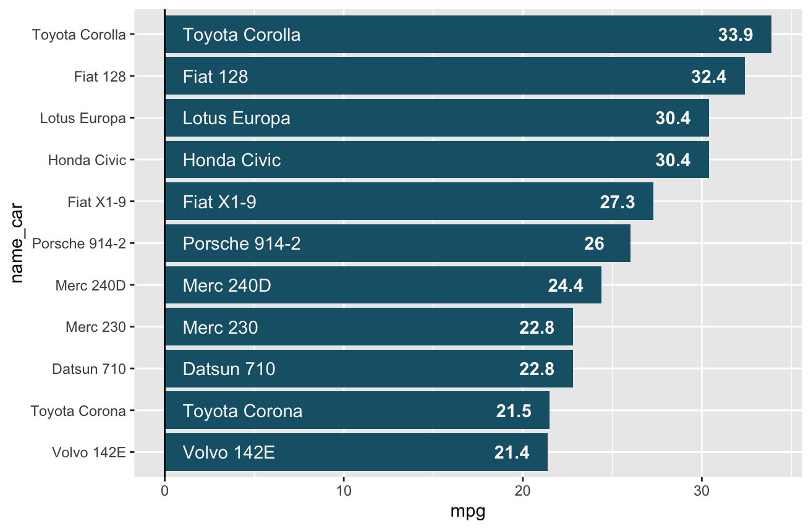
Um gráfico deve ser autoexplicativo. Neste post, discutiremos três estratégias simples para realçar informações em um gráfico: usar linhas com geom_vline(), geom_hline() e geom_abline() para destacar eixos ou informações numéricas; realçar seções do gráfico com geom_rect(); e destacar informações numéricas e texto usando geom_text() e annotate().
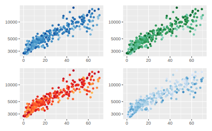
Escalas, legendas e cores são elementos essenciais numa boa visualização. Este post apresenta a lógica das funções que controlam as escalas do gráfico e as suas cores com diversos exemplos.
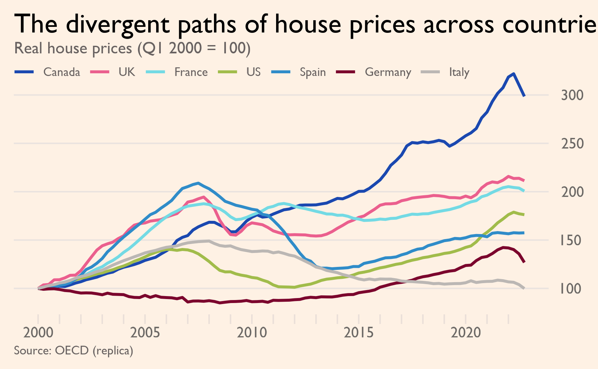
Este post encerra a discussão de elementos ‘estéticos’ de gráficos. Primeiro apresento, brevemente, uma discussão sobre tipografias e como utilizar fontes em gráficos de ggplot2. Depois, entro numa discussão mais detalhada sobre a função theme, que controla todos os aspectos ‘temáticos’ do gráfico
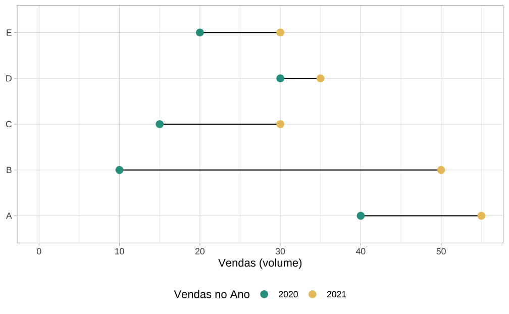
Post intermediário que ensina a fazer gráficos de lollipop no R usando o pacote ggplot2. Os gráficos de lollipop consistem de barras com círculos no topo, que representam os valores das observações. Eles são utilizados tanto para substituir gráficos de coluna convencionais, como para destacar e comparar valores entre diferentes categorias ou momentos no tempo.
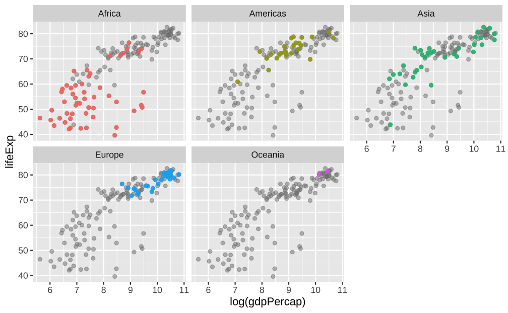
Facets são pequenos gráficos que, lado a lado, ajudam a comparar várias informações ao mesmo tempo. Este post intermediário ensina a fazer gráficos de facets no R usando o ggplot2.
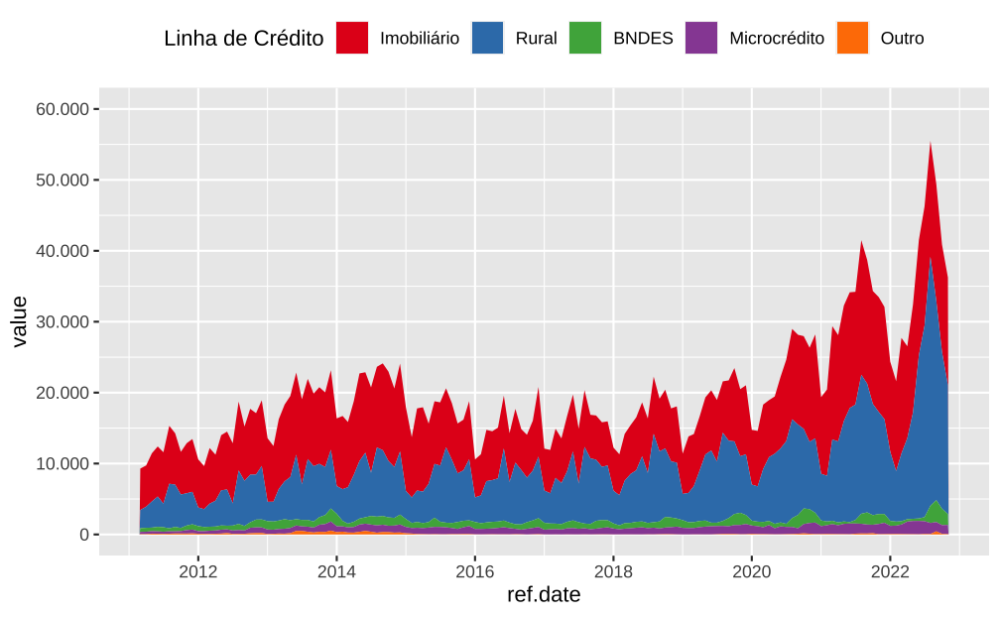
Post intermediário que ensina a fazer gráficos de área no R usando o pacote ggplot2.
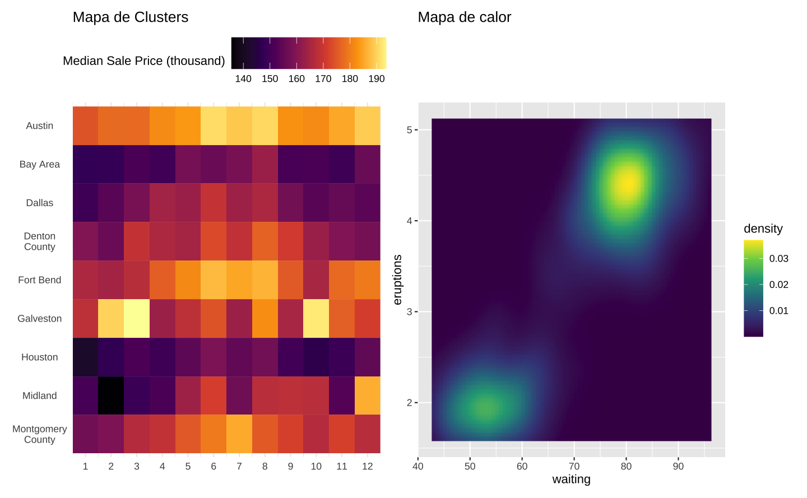
Mapas de calor apresentam a variação de uma variável num plano bidemensional para sugerir padrões, tendências, ou mesmo para visualizar a evolução de uma variável num grupo de classes. Este post intermediário ensina a fazer este tipo de gráfico no R.
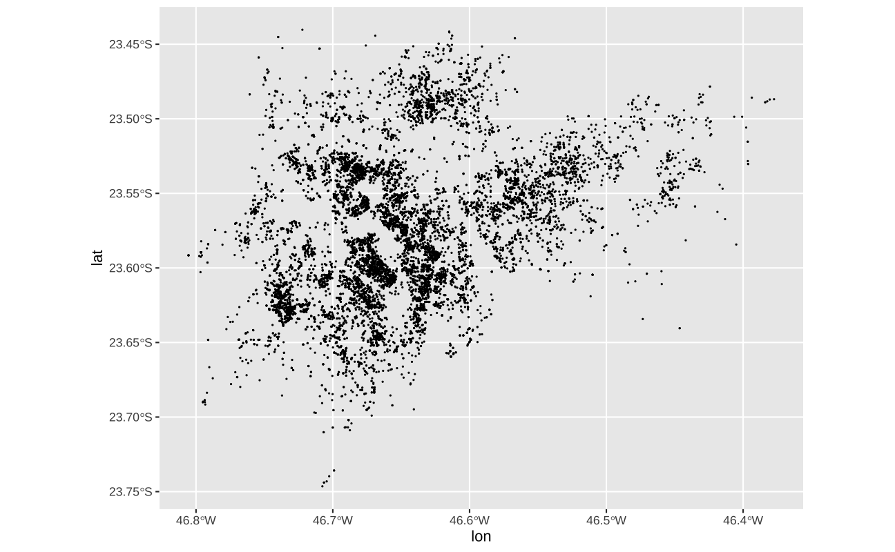
O ggplot2 tem uma ótima interface para a produção de mapas de alta qualidade. Neste primeiro post, mostro como fazer mapas usando os conhecimentos adquiridos até aqui sem a necessidade de se preocupar com objetos geométricos.